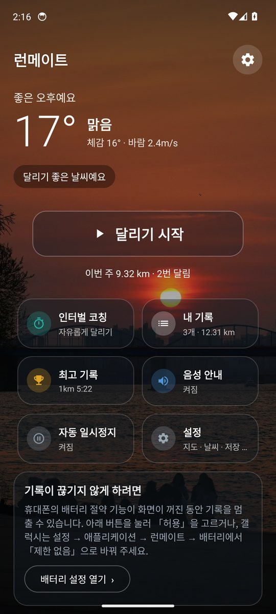
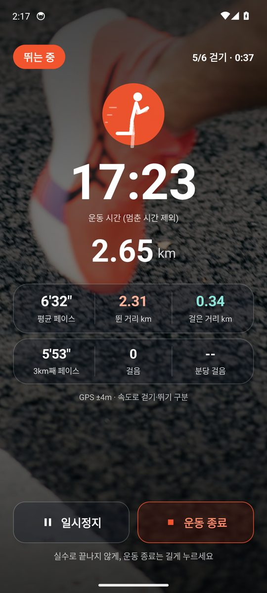
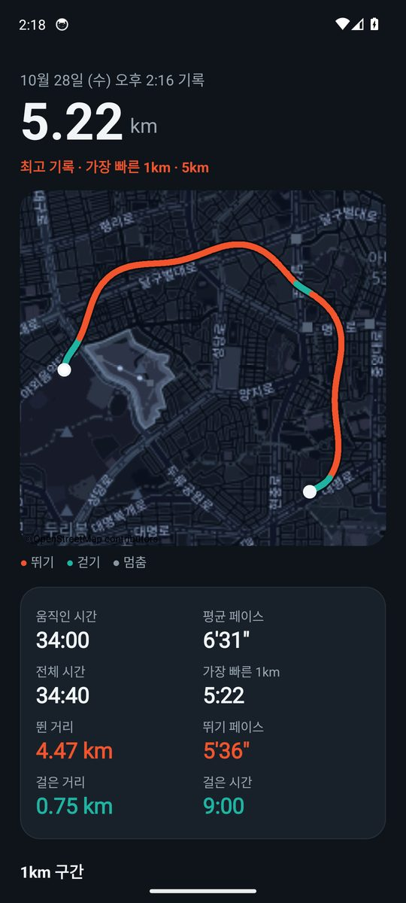
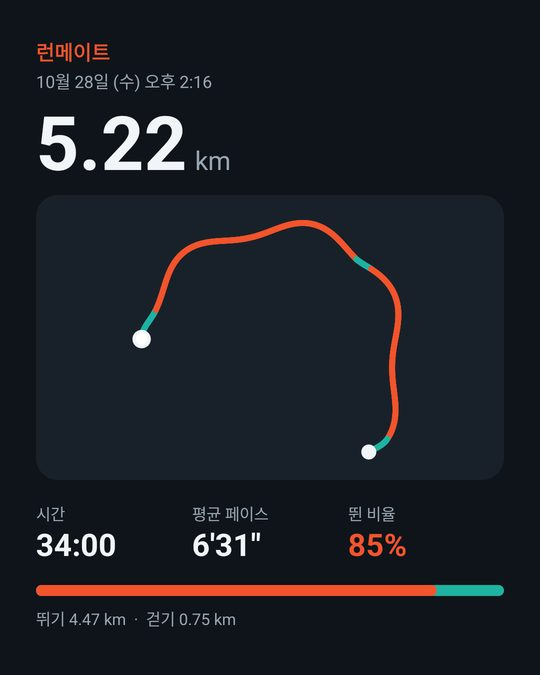

기록 파일로 웹에서 보기
PC나 아이폰에서는 앱을 설치할 수 없어서, 기록 파일(GPX)을 열어 같은 화면을 봅니다. 런메이트 앱에서 내보낸 파일은 앱이 나눈 걷기·뛰기를 그대로 쓰고, 다른 러닝 앱의 GPX는 앱과 같은 규칙으로 다시 나눕니다.
평균 페이스--'--"
뛴 거리0.00
걸은 거리0.00
경로
뛰기 걷기 멈춤
시간 흐름
1km 구간 (가장 빠른 구간은 주홍)
앱에서는 이렇게 씁니다

첫 화면 — 날씨에 따라 바뀌는 배경

달리는 중 — 시간·거리·페이스

기록 보기 — 지도와 1km 구간

공유 이미지 — 지도 없이 길 모양만
화면은 에뮬레이터에서 예시 기록으로 찍은 것입니다.
- 시작을 누르고 휴대폰을 주머니에 넣습니다. 화면이 꺼지거나 잠겨도 기록이 이어지고, 휴대폰이 앱을 강제로 꺼도 앱을 다시 열면 그 자리부터 이어서 기록합니다.
- 걷다가 뛰면 휴대폰 동작 인식과 걸음 센서(분당 140걸음 이상), GPS 속도로 걷기·뛰기가 자동으로 바뀝니다. 걸음 수와 케이던스도 함께 기록합니다.
- 알림 카드에서 흐르는 운동 시간, 거리, 몇 km째를 보고, 「일시정지/계속」·「종료」 버튼으로 앱을 열지 않고 조작합니다. 1km마다 음성으로 거리와 시간을 알려 주고, 신호등 앞에서 멈추면 자동 일시정지합니다.
- 처음이라면 「1분 뛰기 / 2분 걷기 × 6」 같은 인터벌 코칭을 골라 뛰기와 걷기 차례를 음성으로 안내받을 수 있습니다.
- 끝나면 정지를 길게 누르거나 알림의 「종료」를 누릅니다. 기록 보기에서 지도, 1km 구간, 걸음 수, 이번 주 거리와 최고 기록을 보고, 이미지로 공유하거나 GPX로 내보낼 수 있습니다.
- 새 버전이 나오면 앱이 알려 주고, 받은 파일이 진짜인지(SHA-256) 확인한 뒤 설치 화면을 엽니다.
기록은 휴대폰 안에만 저장되고 인터넷으로 보내지 않습니다. 인터넷은 지도 그림(OpenStreetMap), 날씨(약 10km 단위로 줄인 위치만 Open-Meteo에 보냄), 업데이트 확인(GitHub)에만 쓰며, 설정에서 각각 끌 수 있습니다.